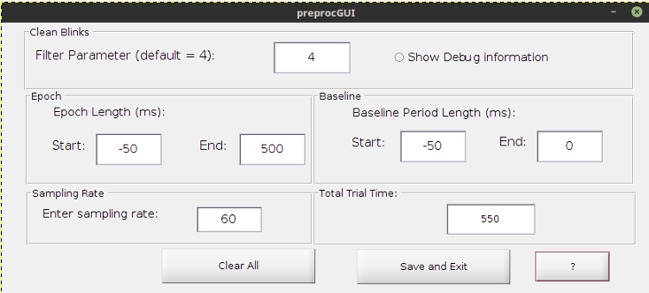

Set PreProc Options

Set the preprocessing options or parameters for preprocessing.
If
Import PreProc Options was used the values imported will be reflected in the PreProc Options window.
Broken into three categories:
- Cleaning blinks Parameters
- Uses a function from Jackson & Sirosiss 2009 References
- Input is a smoothing parameter
- Designate whether or not you want to print debug information
- Defining Epochs
- Epoch Start/Stop Designation
- In milliseconds and is the entire epoch including the baseline period (designated as a negative integer)
- Baseline Length
- In milliseconds and is just the portion of time prior to the epoch (or period of interest) that is to be used as the baseline
- Total Trial Time
- Shows how many milliseconds comprise the entire epoch.
- This includes the baseline time and period of interest time
- Set Sample Rate
- Enter the sampling rate that was used when acquiring the data samples.
Clear Button
- Resets all boxes back to their initial state
Save and Exit
- Saves the values inputted and closes the window
Return to PupilPlot